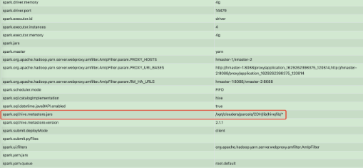
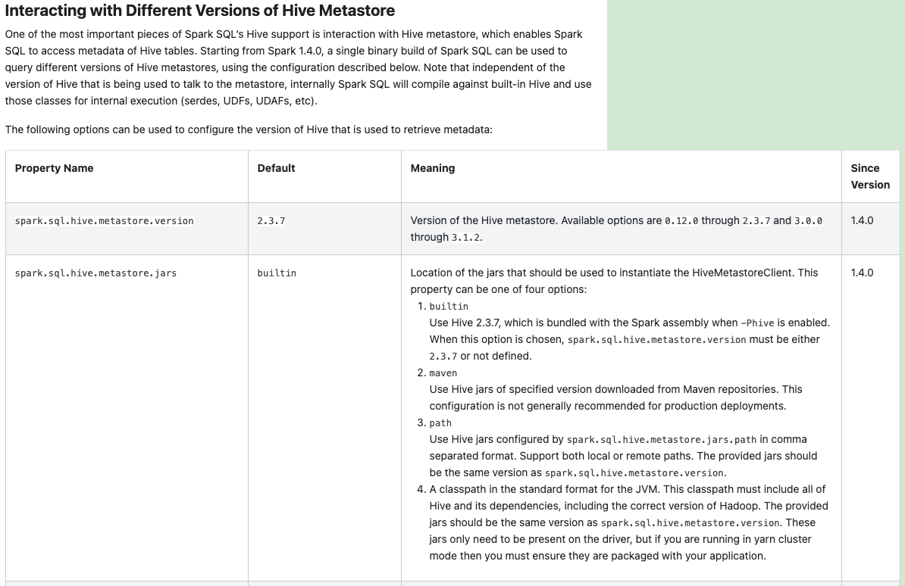

spark-sql Error After Upgrading Spark 2.4 to 3.1
background
The two nodes upgraded the spark version respectively, from 2.4 to 3.1. After the upgrade, one node executed spark-SQL normally, but the other node reported an error. The error information is as follows:
spark-sql> select * from $table where dt = '$dt' limit 5;
Error in query: org.apache.hadoop.hive.ql.metadata.HiveException: Unable to fetch table $table. Invalid method name: 'get_table_req'
org.apache.spark.sql.AnalysisException: org.apache.hadoop.hive.ql.metadata.HiveException: Unable to fetch table $table. Invalid method name: 'get_table_req'
at org.apache.spark.sql.hive.HiveExternalCatalog.withClient(HiveExternalCatalog.scala:112)
at org.apache.spark.sql.hive.HiveExternalCatalog.tableExists(HiveExternalCatalog.scala:854)
at org.apache.spark.sql.catalyst.catalog.ExternalCatalogWithListener.tableExists(ExternalCatalogWithListener.scala:146)
at org.apache.spark.sql.catalyst.catalog.SessionCatalog.tableExists(SessionCatalog.scala:462)
at org.apache.spark.sql.catalyst.catalog.SessionCatalog.requireTableExists(SessionCatalog.scala:197)
at org.apache.spark.sql.catalyst.catalog.SessionCatalog.getTableRawMetadata(SessionCatalog.scala:488)
at org.apache.spark.sql.catalyst.catalog.SessionCatalog.getTableMetadata(SessionCatalog.scala:474)
at org.apache.spark.sql.execution.datasources.v2.V2SessionCatalog.loadTable(V2SessionCatalog.scala:65)
at org.apache.spark.sql.connector.catalog.CatalogV2Util$.loadTable(CatalogV2Util.scala:282)
...
Caused by: org.apache.hadoop.hive.ql.metadata.HiveException: Unable to fetch table $table. Invalid method name: 'get_table_req'
at org.apache.hadoop.hive.ql.metadata.Hive.getTable(Hive.java:1282)
at org.apache.spark.sql.hive.client.HiveClientImpl.getRawTableOption(HiveClientImpl.scala:392)
at org.apache.spark.sql.hive.client.HiveClientImpl.$anonfun$tableExists$1(HiveClientImpl.scala:406)
at scala.runtime.java8.JFunction0$mcZ$sp.apply(JFunction0$mcZ$sp.java:23)
at org.apache.spark.sql.hive.client.HiveClientImpl.$anonfun$withHiveState$1(HiveClientImpl.scala:291)
at org.apache.spark.sql.hive.client.HiveClientImpl.liftedTree1$1(HiveClientImpl.scala:224)
at org.apache.spark.sql.hive.client.HiveClientImpl.retryLocked(HiveClientImpl.scala:223)
at org.apache.spark.sql.hive.client.HiveClientImpl.withHiveState(HiveClientImpl.scala:273)
at org.apache.spark.sql.hive.client.HiveClientImpl.tableExists(HiveClientImpl.scala:406)
at org.apache.spark.sql.hive.HiveExternalCatalog.$anonfun$tableExists$1(HiveExternalCatalog.scala:854)
at scala.runtime.java8.JFunction0$mcZ$sp.apply(JFunction0$mcZ$sp.java:23)
at org.apache.spark.sql.hive.HiveExternalCatalog.withClient(HiveExternalCatalog.scala:102)
... 126 more
Caused by: org.apache.thrift.TApplicationException: Invalid method name: 'get_table_req'
at org.apache.thrift.TServiceClient.receiveBase(TServiceClient.java:79)
at org.apache.hadoop.hive.metastore.api.ThriftHiveMetastore$Client.recv_get_table_req(ThriftHiveMetastore.java:1567)
at org.apache.hadoop.hive.metastore.api.ThriftHiveMetastore$Client.get_table_req(ThriftHiveMetastore.java:1554)
at org.apache.hadoop.hive.metastore.HiveMetaStoreClient.getTable(HiveMetaStoreClient.java:1350)
at org.apache.hadoop.hive.ql.metadata.SessionHiveMetaStoreClient.getTable(SessionHiveMetaStoreClient.java:127)
at sun.reflect.NativeMethodAccessorImpl.invoke0(Native Method)
at sun.reflect.NativeMethodAccessorImpl.invoke(NativeMethodAccessorImpl.java:62)
at sun.reflect.DelegatingMethodAccessorImpl.invoke(DelegatingMethodAccessorImpl.java:43)
at java.lang.reflect.Method.invoke(Method.java:498)
at org.apache.hadoop.hive.metastore.RetryingMetaStoreClient.invoke(RetryingMetaStoreClient.java:173)
at com.sun.proxy.$Proxy31.getTable(Unknown Source)
at sun.reflect.NativeMethodAccessorImpl.invoke0(Native Method)
at sun.reflect.NativeMethodAccessorImpl.invoke(NativeMethodAccessorImpl.java:62)
at sun.reflect.DelegatingMethodAccessorImpl.invoke(DelegatingMethodAccessorImpl.java:43)
at java.lang.reflect.Method.invoke(Method.java:498)
at org.apache.hadoop.hive.metastore.HiveMetaStoreClient$SynchronizedHandler.invoke(HiveMetaStoreClient.java:2336)
at com.sun.proxy.$Proxy31.getTable(Unknown Source)
at org.apache.hadoop.hive.ql.metadata.Hive.getTable(Hive.java:1274)
... 137 more
position
The above error report indicates that there is a version compatibility issue when spark connects to Hive metastore.
Use spark-SQL to execute the same SQL on two nodes respectively. After comparing the two spark applications, it is found that there is a different configuration.

A normal node has one line of configuration as follows:
spark.sql.hive.metastore.jars=/opt/cloudera/parcels/CDH/lib/hive/lib/*
After modifying spark-default.conf on the abnormal node, the test is normal.
reason
Spark has a built-in Hive, which corresponds to 2.3.6 in 3.1.1. If you want to connect to other versions of Hive metastore, you don’t need to repackage it. You only need to modify the variable configuration.
